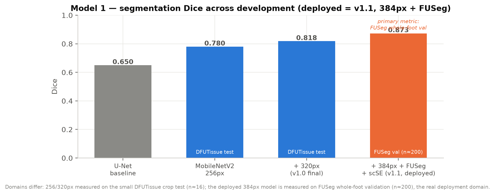
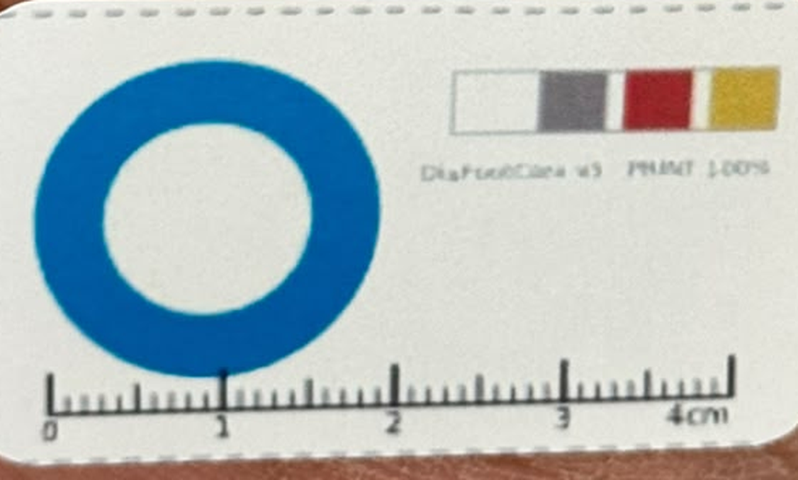
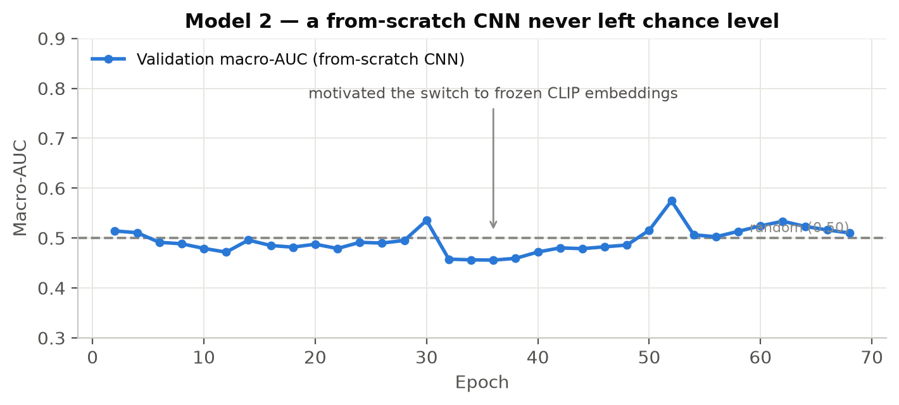
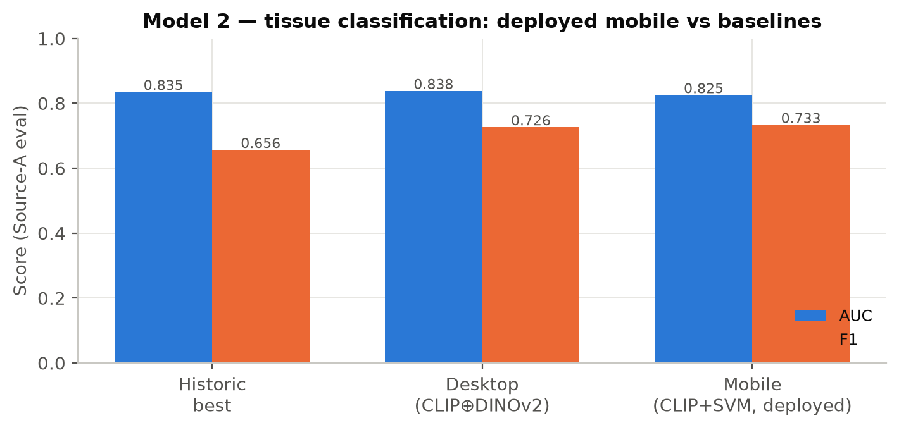
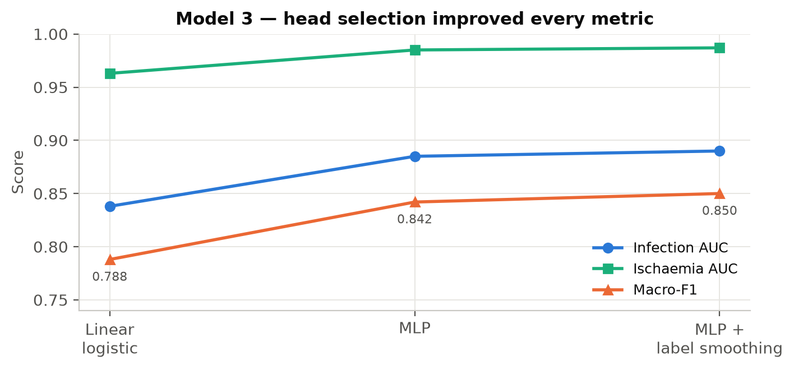
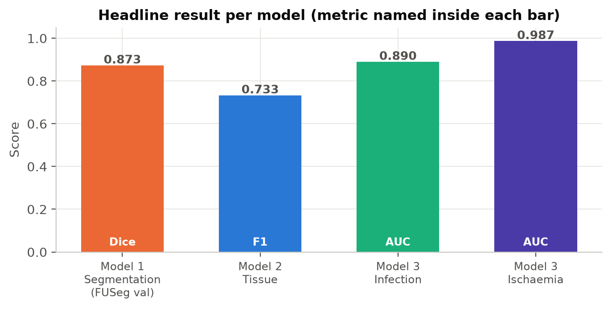
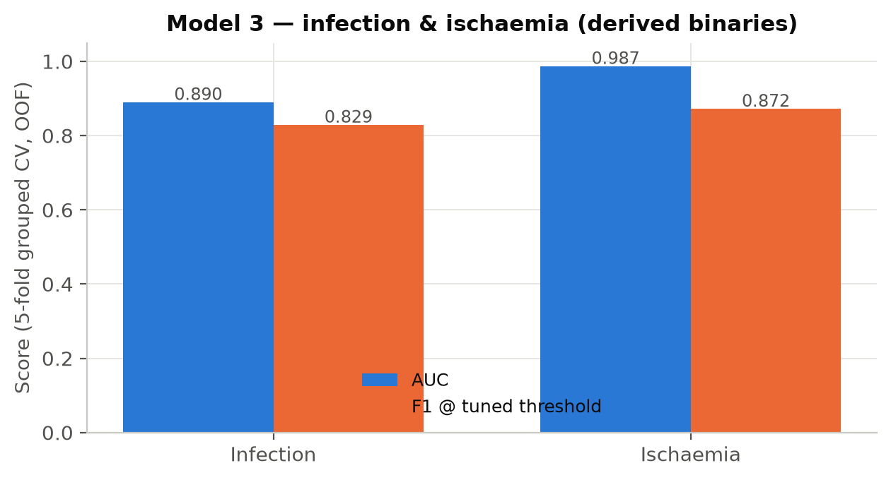
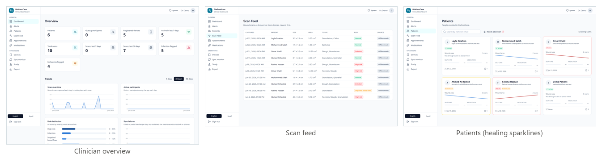

<!--
  DiaFootCare — Full Research Documentation (editable source)
  Render: Chrome headless --print-to-pdf, then docs/stamp_pdf.py
  Figures: docs/figures/*.png
-->
<meta charset="utf-8">
<title>DiaFootCare — Full Research Documentation</title>
<style>
  :root{
    --teal:#1f5c74; --teal-dark:#17475b; --teal-tint:#eef4f7;
    --maroon:#8a3b3f; --maroon-tint:#f6ecec;
    --ink:#232a2e; --muted:#5b6a72; --line:#d6dee2; --line-soft:#e7edf0;
    --amber:#8a6d1f; --amber-tint:#f8f2e0; --green:#2f7d5b;
  }
  *{box-sizing:border-box}
  html{font-family:"Calibri","Segoe UI",system-ui,sans-serif;color:var(--ink);font-size:10.5pt;line-height:1.42;}
  body{margin:0}
  code,.mono{font-family:"Consolas","SF Mono",monospace;font-size:9.1pt;background:#f3f5f6;padding:0 2px;border-radius:2px;color:#2b3b44;}
  h1,h2,h3,h4{color:var(--teal-dark);line-height:1.2;margin:0 0 .3em;font-weight:700}
  h2{font-size:16pt;padding-bottom:.16em;border-bottom:2px solid var(--teal);margin-top:0}
  h2 .num{color:var(--teal)}
  h3{font-size:12pt;margin-top:1em;color:var(--teal)}
  h4{font-size:10.6pt;margin:.75em 0 .25em;color:var(--maroon)}
  p{margin:.42em 0}
  ul,ol{margin:.35em 0 .5em;padding-left:1.2em} li{margin:.18em 0}
  a{color:var(--teal);text-decoration:none}
  @page{size:A4;margin:20mm 16mm 18mm}
  .page{page-break-after:always} .page:last-child{page-break-after:auto}
  .newsec{page-break-before:always} .keep{page-break-inside:avoid}
  .title-page{height:255mm;display:flex;flex-direction:column;justify-content:center}
  .eyebrow{letter-spacing:.3em;text-transform:uppercase;color:var(--teal);font-weight:700;font-size:10pt}
  .title-page h1{font-size:28pt;color:var(--teal-dark);margin:.15em 0 .1em;line-height:1.12}
  .title-page .sub{font-size:13.5pt;color:var(--ink);font-weight:600;margin:.2em 0}
  .rule{height:3px;width:120px;background:var(--maroon);margin:.6em 0 1.3em}
  .title-meta{font-size:10.3pt;color:var(--muted)} .title-meta strong{color:var(--ink)}
  table{border-collapse:collapse;width:100%;margin:.55em 0 .3em;font-size:9.3pt}
  th,td{border:.7px solid var(--line);padding:4px 7px;vertical-align:top;text-align:left}
  thead th{background:var(--teal);color:#fff;font-weight:600;border-color:var(--teal)}
  tbody tr:nth-child(even){background:#f6f9fa}
  td.n,th.n{text-align:center;white-space:nowrap}
  .cap{font-size:8.5pt;color:var(--muted);margin:.1em 0 1em;line-height:1.34} .cap b{color:var(--ink)}
  .callout{border-left:4px solid var(--teal);background:var(--teal-tint);padding:8px 12px;margin:.65em 0;border-radius:0 4px 4px 0}
  .callout .k{display:block;font-size:8.4pt;letter-spacing:.08em;text-transform:uppercase;font-weight:700;color:var(--teal-dark);margin-bottom:2px}
  .callout.limit{border-left-color:var(--maroon);background:var(--maroon-tint)} .callout.limit .k{color:var(--maroon)}
  .callout.note{border-left-color:var(--amber);background:var(--amber-tint)} .callout.note .k{color:var(--amber)}
  .callout.ok{border-left-color:var(--green);background:#eaf5ef} .callout.ok .k{color:var(--green)}
  .callout p{margin:.22em 0}
  figure{margin:.5em 0 .2em;page-break-inside:avoid;text-align:center}
  figure img{max-width:100%;border:1px solid var(--line-soft);border-radius:5px}
  figure figcaption{font-size:8.5pt;color:var(--muted);margin-top:4px;text-align:center} figure figcaption b{color:var(--ink)}
  .lead{color:var(--muted)}
  .toc .l1{font-weight:700;color:var(--teal-dark);margin:.45em 0 .08em} .toc .l1 .pg{float:right;color:var(--muted);font-weight:400}
  .toc .l2{margin:.04em 0 .04em 1.4em;color:var(--ink)} .toc .l2 .pg{float:right;color:var(--muted)}
  .pill{display:inline-block;font-size:8pt;font-weight:700;padding:1px 7px;border-radius:9px}
  .win{color:var(--green);font-weight:700}
</style>

<!-- ===================== TITLE ===================== -->
<section class="page title-page">
  <div class="eyebrow">DiaFootCare · Doctoral Research</div>
  <h1>Full Research Documentation:<br>Model Development, Training and Evaluation</h1>
  <div class="sub">The experiments behind a three-model on-device platform for diabetic-foot-ulcer assessment</div>
  <div class="rule"></div>
  <p style="max-width:152mm;color:var(--muted)">A detailed account of the work done to develop, train and
    evaluate the DiaFootCare analysis models — the datasets and their expansion, the training procedures, the
    experimental comparisons that decided each design, and the results — together with the application, the
    clinical dashboard, and the current deployment and data-collection status.</p>
  <div style="height:10mm"></div>
  <div class="title-meta">
    <div><strong>Version 1.1</strong> &nbsp;·&nbsp; 29 July 2026 &nbsp;·&nbsp; app build 1.1.0 (2)
      &nbsp;·&nbsp; <span class="pill" style="background:var(--amber-tint);color:var(--amber)">Pre-release — not yet released to users</span></div>
    <div style="margin-top:.35em;font-size:9.4pt">Extends the three-model reference and the Word edition
      (<code>D:\DF\DaiFootCare_Full_Documentation.docx</code>) with the full training and experimental detail.</div>
  </div>
</section>

<!-- ===================== CONTENTS ===================== -->
<section class="page">
  <h2>Contents</h2>
  <div class="toc">
    <div class="l1">1&nbsp;&nbsp;Introduction, aims and system overview <span class="pg">3</span></div>
    <div class="l1">2&nbsp;&nbsp;Datasets and data collection <span class="pg">4</span></div>
    <div class="l1">3&nbsp;&nbsp;Methodology and the training phase <span class="pg">5</span></div>
    <div class="l2">3.1&nbsp;&nbsp;Architecture and the shared backbone <span class="pg">5</span></div>
    <div class="l2">3.2&nbsp;&nbsp;Model 1 — segmentation: training in detail <span class="pg">5</span></div>
    <div class="l2">3.3&nbsp;&nbsp;Model 2 — tissue: training in detail <span class="pg">7</span></div>
    <div class="l2">3.4&nbsp;&nbsp;Model 3 — infection &amp; ischaemia: training in detail <span class="pg">8</span></div>
    <div class="l2">3.5&nbsp;&nbsp;Shared image preprocessing <span class="pg">9</span></div>
    <div class="l1">4&nbsp;&nbsp;Experimental comparisons — how each design was chosen <span class="pg">10</span></div>
    <div class="l2">4.1&nbsp;&nbsp;Model 2: from-scratch CNN vs frozen CLIP <span class="pg">10</span></div>
    <div class="l2">4.2&nbsp;&nbsp;Model 3: head and regulariser bake-offs <span class="pg">12</span></div>
    <div class="l2">4.3&nbsp;&nbsp;Cross-source generalisation <span class="pg">12</span></div>
    <div class="l1">5&nbsp;&nbsp;Results and evaluation <span class="pg">13</span></div>
    <div class="l1">6&nbsp;&nbsp;System integration, app and dashboard <span class="pg">16</span></div>
    <div class="l1">7&nbsp;&nbsp;Deployment, publication and data collection <span class="pg">17</span></div>
    <div class="l1">8&nbsp;&nbsp;Discussion, limitations and future work <span class="pg">18</span></div>
    <div class="l1">Appendix A — file map · References <span class="pg">22</span></div>
  </div>
  <div class="callout note" style="margin-top:1.6em">
    <span class="k">Release status — not yet released to users</span>
    <p>DiaFootCare has not yet been released to end users. The build described here was deployed to the project
      server for the research and clinical team, for internal testing and the start of supervised data
      collection. No public or participant release has taken place, and all dashboard screenshots use fictional
      demo data.</p>
  </div>
  <div class="callout">
    <span class="k">How to read this document</span>
    <p>Section 3 documents <em>how</em> each model was trained; Section 4 documents the <em>experiments</em> that
      chose each design (the comparisons made during development); Section 5 reports the final <em>evaluation</em>.
      Every figure is a chart built from the actual notebook training logs and evaluation outputs in
      <code>D:\DF</code> and <code>D:\Diafoot experments\model one</code>.</p>
  </div>
  <div class="callout limit">
    <span class="k">Corrected in this revision (Model 1)</span>
    <p>The Model 1 figures were re-verified against the deployed artefact and the training notebook. The earlier draft
      described the <em>superseded 320px</em> model (~75 DFUTissue masks, test Dice 0.818). The <strong>deployed
      model is the 384px v1.1 retrain</strong>: it adds <strong>FUSeg</strong> (810+200 whole-foot masks, the primary
      validation) and Medetec, a precise pool of <strong>≈1,270 images</strong>, scSE decoder attention,
      checkpointing by <em>val Dice</em>, and a headline <strong>FUSeg-validation Dice of 0.873</strong>. Sections 2,
      3.2, 3.5, 5.1 and 8 have been updated accordingly.</p>
  </div>
</section>

<!-- ===================== 1. INTRO ===================== -->
<section class="page">
  <h2><span class="num">1</span>&nbsp;&nbsp;Introduction, aims and system overview</h2>
  <p>Diabetic foot ulcers (DFUs) precede most non-traumatic lower-limb amputations, heal slowly, and can change
    course within days; because neuropathy blunts pain, deterioration is often silent between clinic visits. The
    aim of this work was to build and evaluate an integrated platform that moved frequent, objective wound
    assessment onto the patient's own phone while keeping a clinician in the loop.</p>
  <p>Three deep-learning models were developed and trained for this purpose: a wound-segmentation network that
    produced pixel masks and derived measurements; a tissue-classification model; and an infection-and-ischaemia
    model. The two classification models were designed to <strong>share a single frozen CLIP ViT-B/32 image
    encoder</strong>, evaluated once per image, so that each downstream task added only a small head and the
    installed footprint stayed small. The models were quantised to TensorFlow-Lite and embedded in a Flutter
    application, with an equivalent server pipeline; a Laravel-and-Vue dashboard supervised the cohort. This
    document concentrates on the model development, the training phase, and the experimental comparisons that
    justified each choice.</p>
  <table>
    <thead><tr><th class="n">#</th><th>Model</th><th>Task</th><th>Approach</th><th>Deployed head</th><th>Headline</th></tr></thead>
    <tbody>
      <tr><td class="n">1</td><td>Segmentation &amp; measurement</td><td>pixel mask → length / width / area</td>
        <td>U-Net + MobileNetV2 + scSE</td><td><code>model1_wound_fp16.tflite</code> (≈12.4 MB, 384×384)</td><td>FUSeg val Dice 0.873</td></tr>
      <tr><td class="n">2</td><td>Tissue classification</td><td>5 tissue types present</td>
        <td>Frozen CLIP + RBF-SVM</td><td><code>tissue_head.tflite</code> (20 MB)</td><td>AUC 0.825 · F1 0.733</td></tr>
      <tr><td class="n">3</td><td>Infection &amp; ischaemia</td><td>infection + blood-flow → risk badge</td>
        <td>Frozen CLIP (shared) + MLP</td><td><code>infection_ischaemia_head.tflite</code> (262 KB)</td><td>AUC 0.890 / 0.987</td></tr>
    </tbody>
  </table>
  <div class="cap"><b>Table 1.</b> The three models. Models 2 and 3 were developed in the same
    <code>D:\DF</code> workspace and share the one frozen CLIP backbone.</div>
</section>

<!-- ===================== 2. DATASETS ===================== -->
<section class="page newsec">
  <h2><span class="num">2</span>&nbsp;&nbsp;Datasets and data collection</h2>
  <p>Six collections were used. Two facts shaped every downstream decision: once <strong>FUSeg</strong> is counted,
    Model 1's precise wound-mask training pool is far larger than an early draft stated (<strong>≈1,270 precise
    images</strong>, not ~75), and the tissue labels were <em>expanded during the project</em> by clinician review —
    the first stage of the data-gathering effort described in Section 7.</p>
  <table>
    <thead><tr><th>Collection</th><th>Used by</th><th class="n">Size</th><th>Role in this work</th></tr></thead>
    <tbody>
      <tr><td><strong>FUSeg</strong> (Foot Ulcer Segmentation Challenge)</td><td>Model 1</td><td class="n">810 train + 200 val</td>
        <td><strong>Primary precise masks and primary validation.</strong> Whole-foot photos with pixel masks — the
          real deployment domain. FUSeg validation (n≈200) drove checkpoint selection, early stopping and threshold
          tuning, and supplied most of Model 1's real training signal.</td></tr>
      <tr><td>DFUTissue / DFUTissueSegNet</td><td>Models 1, 2</td><td class="n">~93 precise (78 tr / 15 val / 16 test)</td>
        <td>Finely annotated wound-<em>crop</em> masks and tissue labels; oversampled ×4 in Model 1 training and used
          as a secondary cross-domain check, not the primary metric. Also the tissue-label source for Model 2.</td></tr>
      <tr><td>Medetec (foot-ulcer-224)</td><td>Model 1</td><td class="n">~152 precise</td>
        <td>Extra precise wound-crop masks merged into the Model 1 training pool.</td></tr>
      <tr><td>DFUC 2020</td><td>Models 1, 2</td><td class="n">600 loaded; 250 / run; 810 labelled</td>
        <td>Weak box-derived pseudo-masks for Phase-1 localisation only (dropped in Phase-2 fine-tuning); separately,
          810 of its images were later given real six-class doctor labels for Model 2.</td></tr>
      <tr><td>DFUC 2021</td><td>Models 1, 3</td><td class="n">5,955 wounds</td>
        <td>Representative images for the int8 export; whole-image infection/ischaemia labels for Model 3.</td></tr>
      <tr><td>Part B (DFUNet)</td><td>Model 3</td><td class="n">1,447 wounds</td>
        <td>Jointly infection- and ischaemia-labelled wounds; lifted the scarce ischaemia and "both" classes.</td></tr>
      <tr><td>Doctor-reviewed (Source A)</td><td>Model 2</td><td class="n">367 reviewed → 366 used</td>
        <td>Clinician-reviewed labels added for this project (part of the gathered data, §7).</td></tr>
    </tbody>
  </table>
  <div class="cap"><b>Table 2.</b> Datasets and their roles. FUSeg and Medetec are the primary precise-mask sources for
    Model 1 (from the <code>uwm-bigdata/wound-segmentation</code> repository, Wang et al. 2020).</div>
  <h3>2.1&nbsp;&nbsp;The tissue-label expansion (gathered data)</h3>
  <p>The deployed tissue model was trained on a <strong>pooled "gold" set of 1,176 doctor-labelled images</strong>,
    assembled during the project: 366 Source-A images that passed loading (367 were clinician-reviewed — an increase
    of 81 over the earlier sheet — with one dropped as unreadable/unlabelled), plus 810 DFUC 2020 training images that
    previously carried only bounding boxes and were given real six-class doctor labels on 30 June 2026 (366 + 810 =
    1,176). Evaluation was reported on these 366 Source-A images so results stayed comparable to the historic baseline. This annotation activity is ongoing and underpins the next iteration.</p>
</section>

<!-- ===================== 3. METHODOLOGY / TRAINING ===================== -->
<section class="page newsec">
  <h2><span class="num">3</span>&nbsp;&nbsp;Methodology and the training phase</h2>

  <h3>3.1&nbsp;&nbsp;Architecture and the shared backbone</h3>
  <p>The central architectural decision was that Models 2 and 3 shared one frozen CLIP ViT-B/32 encoder. It was the
    only large asset, loaded once and executed once per image to produce a 512-dimensional embedding; each task
    then added a small head (20 MB for tissue, 262 KB for infection/ischaemia). The segmentation model was
    standalone. This kept the installed application small and per-image inference fast, because the expensive
    encoder pass was amortised across two clinical tasks. The backbone was never re-trained: both heads were
    trained on <em>cached</em> embeddings, which made each experiment cheap to rerun (embedding extraction took a
    few minutes and was cached thereafter).</p>

  <h3>3.2&nbsp;&nbsp;Model 1 — wound segmentation: training in detail</h3>
  <p>Model 1 was framed as binary semantic segmentation: each pixel of a <strong>384×384</strong> input was labelled
    wound or background, producing a per-pixel wound-probability mask that a deterministic stage turned into
    measurements. (An earlier development model ran at 320×320; the deployed model, described here, is the 384×384
    v1.1 retrain — see the evolution in Figure 1.)</p>
  <div class="callout note"><span class="k">Source of truth for this section</span>
    <p>These figures were verified against the deployed artefact and the training notebook
      (<code>model-1-kaggle-with res.ipynb</code>, Kaggle GPU, in <code>D:\Diafoot experments\model one</code>).
      The shipped <code>model1_wound_fp16.tflite</code> reads its input shape directly as
      <code>[1, 384, 384, 3]</code> and is 12,446,944 bytes, confirming the 384px v1.1 model.</p>
  </div>
  <h4>Data preparation and augmentation</h4>
  <p>The precise-mask training pool combined three sources: <strong>FUSeg</strong> (810 whole-foot training images
    with pixel masks, added at 1×), <strong>DFUTissue</strong> (~78 finely annotated tight-crop training images, its
    official split, <strong>oversampled ×4</strong> to counter their scarcity), and <strong>Medetec</strong> (~152
    precise crops) — together <strong>≈1,270 precise image/mask pairs</strong> (an early draft wrongly stated ~75).
    Coarse box-derived pseudo-masks from DFUC 2020 were added for <em>Phase-1 only</em>, with 600 images loaded and a
    random 250-image subsample mixed in per run, then dropped entirely in Phase-2. Strong augmentation (flips,
    rotations, zoom and random cutout/erasing) was applied throughout.</p>
  <p><strong>Two-tier validation.</strong> FUSeg's 200-image validation split — stable in size and matching the real
    deployment domain (a phone photo of a whole foot) — was the <strong>primary</strong> validation set: it drove
    checkpoint selection, early stopping and the deployment threshold. DFUTissue's own small held-out validation
    (~15) and test (~16) were kept only as a secondary <em>cross-domain crop</em> check, since they reflect the
    tighter wound crops the DFUTissue paper evaluates on.</p>
  <h4>Network and loss</h4>
  <p>A U-Net decoder was built on a pretrained MobileNetV2 encoder (ImageNet transfer learning), with encoder skip
    connections and, in v1.1, <strong>scSE (concurrent spatial-and-channel squeeze-excitation) attention</strong>
    after each decoder up-block — a cheap, fully TFLite-convertible module that sharpens the wound boundary. A
    <strong>384×384</strong> input was chosen over 320×320 to put more pixels on the small whole-foot wound. The loss
    combined <code>0.5 × BCE</code> with a <strong>Focal-Tversky</strong> term (α = 0.3, β = 0.7, γ = 0.75); the
    asymmetric Tversky weighting penalised <em>missed</em> wound pixels more heavily, raising recall and Dice on the
    small wound region.</p>
  <h4>Multi-phase training schedule</h4>
  <table>
    <thead><tr><th class="n">Phase</th><th>What was trained</th><th>Epochs</th><th>LR</th><th>Purpose</th></tr></thead>
    <tbody>
      <tr><td class="n">1</td><td>Decoder only (encoder frozen), on precise + box masks</td><td class="n">25</td><td class="n">1e-3</td>
        <td>Learn to decode ImageNet features into wound masks without disturbing the encoder.</td></tr>
      <tr><td class="n">2</td><td><strong>Deep fine-tune</strong> from encoder layer 40 of ~155 (BN frozen), precise-only</td><td class="n">≤60</td><td class="n">1e-4</td>
        <td>Adapt most of the encoder now that the precise pool is ≈1,270 images (was safe to go deeper than the old top-36).</td></tr>
      <tr><td class="n">3</td><td>Self-training on unlabeled images</td><td class="n">off</td><td class="n">—</td>
        <td><strong>Disabled by default</strong> (<code>RUN_SELF_TRAINING=False</code>): it added only ~+0.005 Dice and OOMs at 384px.</td></tr>
    </tbody>
  </table>
  <div class="cap"><b>Table 3.</b> Model 1 v1.1 training schedule. <strong>Checkpoint selection, ReduceLROnPlateau and
    EarlyStopping all monitor <code>val_dice_coef</code> (mode=max)</strong> — not val_loss, whose minimum does not
    coincide with peak Dice. Mixed-precision on GPU.</div>
  <p>The model was trained on <strong>Kaggle</strong> with GPU acceleration (Python 3.11). Model 1 improved across
    development from a plain U-Net baseline to the deployed 384px + FUSeg + scSE model, whose phase-2 monitored
    FUSeg-validation Dice reached <strong>0.873</strong> (Figure 1).</p>
  <figure>
    
    <figcaption><b>Figure 1.</b> Model 1 segmentation Dice across development. The deployed v1.1 model (384px + FUSeg +
      scSE) reached FUSeg whole-foot validation Dice 0.873. Note the domains differ: the 256/320px figures are on the
      small DFUTissue crop test (n≈16), whereas the deployed model is measured on FUSeg validation (n≈200), the real
      deployment domain.</figcaption>
  </figure>
  <h4>Measurement post-processing (ported one-to-one to the app)</h4>
  <p>The plain and horizontally-flipped predictions were first averaged (<strong>2-view TTA</strong>) for a steadier
    mask, resized with <strong>nearest-neighbour</strong> (bilinear silently dilated the mask), binarised at
    <strong>0.5</strong> (the deployment threshold; the FUSeg-tuned optimum ~0.73 was rejected because a high
    threshold shrinks the mask and biases area low), cleaned with a 5×5 morphological opening then closing, and
    reduced to its largest connected component. Length and width were the extents of the wound's <strong>rotated
    principal (PCA) axes</strong> — the minimum-area rectangle (<code>cv2.minAreaRect</code>), correct for a wound
    lying diagonally in the frame — and surface area was the wound-pixel count scaled to cm². Because no physical
    reference object was present, the numbers were treated as relative: the reliable healing signal was the change in
    area over time. <strong>Depth is not estimated from the 2-D mask</strong>: it is taken from a clinician's manual
    probe entry or a depth sensor (LiDAR/ToF), and reported as <em>not measured</em> when neither is supplied —
    never fabricated.</p>
</section>

<!-- Model 2 training -->
<section class="page newsec">
  <h3 style="margin-top:0">3.3&nbsp;&nbsp;Model 2 — tissue classification: training in detail</h3>
  <p>Model 2 reported which tissue types were visible in the wound bed. Because several can be present at once, it
    was framed as multi-label classification over five classes (epithelial, granulation, necrosis, callus, slough);
    a sixth, fibrin, was dropped because the clean evaluation set held only two positive examples.</p>
  <h4>The decisive negative result</h4>
  <p>A from-scratch convolutional network was trained first. As Figure 2 (Section 4.1) shows, its validation
    macro-AUC never left chance across 68 epochs — the small, heterogeneous tissue set could not support a network
    learned from raw pixels. This negative result was decisive and redirected the entire approach toward transfer
    learning from a large pretrained encoder.</p>
  <h4>The deployed approach: frozen CLIP + SVM, exported as TF ops</h4>
  <p>Tissue images were instead encoded with a frozen CLIP ViT-B/32 into 512-dimensional embeddings, on which a
    per-class radial-basis-function support-vector machine (RBF-SVM) was trained; the embeddings carried the
    predictive power the CNN lacked. For deployment the SVM was <strong>reproduced exactly as TensorFlow
    operations</strong> ("SVM-as-TFLite"), verified to within <code>8e-6</code> of the desktop SVM, so on-device
    accuracy equalled the desktop classifier. Training was expanded by augmentation over the 1,176-image gold set.
    A research-best desktop variant that rank-averaged CLIP with DINOv2 was also built (Section 4.1), but DINOv2
    (a ViT-L encoder, ~1.2 GB) was impractical on phones, so the deployed build was CLIP-only.</p>
  <h4>Output and thresholds</h4>
  <p>The head shipped raw per-class probabilities; the application applied per-class thresholds tuned on the gold
    set: epithelial 0.09, granulation 0.43, necrosis 0.60, callus 0.45, slough 0.63. A tissue was reported present
    when its probability met or exceeded its own threshold — per-class thresholds mattered because base rates and
    separability differed sharply between, say, granulation and epithelial tissue.</p>
  <div class="callout"><span class="k">Why the SVM, not a neural head, on top of CLIP</span>
    <p>On the small gold set the RBF-SVM on frozen embeddings was both accurate and stable, and it could be turned
      into a handful of exact TensorFlow operations — a 20 MB head with byte-level parity to the desktop model.
      A trainable neural head offered no accuracy gain here and more variance, so the simpler, exactly-reproducible
      classifier was preferred.</p>
  </div>
</section>

<!-- Model 3 training -->
<section class="page newsec">
  <h3 style="margin-top:0">3.4&nbsp;&nbsp;Model 3 — infection &amp; ischaemia: training in detail</h3>
  <p>Model 3 (developed in the same <code>D:\DF</code> workspace as Model 2, reusing its frozen backbone unchanged)
    replaced an originally-planned "pus level" output, for which no severity labels existed, with two
    clinically-validated indicators. It was trained as a four-class softmax over
    <code>[none, infection, ischaemia, both]</code> — the DFUC 2021 label structure — and the application then
    derived two <strong>independent binaries</strong>:</p>
  <ul>
    <li><code>P(infection) = P(infection) + P(both)</code> → threshold 0.41 → Present / Not Present;</li>
    <li><code>P(ischaemia) = P(ischaemia) + P(both)</code> → threshold 0.61 → Impaired / Adequate.</li>
  </ul>
  <p>This derived-binary formulation handled the rare ischaemia class far better than a direct four-way argmax, and
    fed the two UI rows and a top-level risk badge (Normal / Infection Detected / Impaired Blood Flow / High Risk).</p>
  <h4>Data pooling</h4>
  <p>Two sources were pooled at one representative image per wound. Part B mattered specifically because it lifted
    the scarce ischaemia and "both" classes:</p>
  <table>
    <thead><tr><th>Source</th><th class="n">Wounds</th><th class="n">none</th><th class="n">infection</th><th class="n">ischaemia</th><th class="n">both</th></tr></thead>
    <tbody>
      <tr><td>DFUC 2021</td><td class="n">5,955</td><td class="n">2552</td><td class="n">2555</td><td class="n">227</td><td class="n">621</td></tr>
      <tr><td>Part B (DFUNet)</td><td class="n">1,447</td><td class="n">595</td><td class="n">642</td><td class="n">24</td><td class="n">186</td></tr>
      <tr style="font-weight:700"><td>Pooled</td><td class="n">7,402</td><td class="n">3147</td><td class="n">3197</td><td class="n">251</td><td class="n">807</td></tr>
    </tbody>
  </table>
  <div class="cap"><b>Table 4.</b> Pooled infection/ischaemia data. Part B's pre-made augmentation copies
    (<code>_M</code> mirror, <code>_R</code> rotations) were collapsed to one clean crop per wound — the backbone is
    frozen, so augments add no signal and only risk leakage.</div>
  <h4>Head and training</h4>
  <p>The head was L2-normalise → Dense(256, ReLU) → Dropout(0.5) → Dense(4, softmax), trained with <strong>label
    smoothing 0.05</strong> and class-balanced weights, and exported as a 262 KB fp16 TFLite head with Keras↔TFLite
    parity of 1.2e-04. Cross-validation used <strong>StratifiedGroupKFold(5) grouped by wound</strong>, which
    eliminated augment- and patch-level leakage. The head and its regulariser were not assumed but <em>chosen by
    experiment</em> — Section 4.2.</p>
</section>

<section class="page newsec">
  <h3 style="margin-top:0">3.5&nbsp;&nbsp;Shared image preprocessing</h3>
  <p>Preprocessing for Models 2 and 3 had to match CLIP exactly or accuracy collapsed: decode to RGB, resize so the
    shorter side is 224 (bicubic), centre-crop to 224×224, divide by 255, and per-channel normalise with the CLIP
    mean <code>[0.481, 0.458, 0.408]</code> and standard deviation <code>[0.269, 0.261, 0.276]</code>, fed as NHWC
    float32. Model 1 used its own pipeline (resize to 384×384, divide by 255; the [-1, 1] rescale for MobileNetV2
    was baked into the exported graph). The same preprocessing was implemented identically in Dart and on the
    server, so a wound analysed on the phone and on the server produced the same result.</p>

  <h3>3.6&nbsp;&nbsp;Dimensional calibration and the reference label</h3>
  <p>Photographic measurement requires a metric reference within the field of view. In its absence the pipeline
    assumes a fixed field width (<code>_assumedFrameCm = 12.0</code>), and reported dimensions then scale with the
    ratio of true to assumed camera distance; in one recorded case a 1.4&nbsp;cm wound was reported as
    0.9&nbsp;cm. Measurements obtained this way are flagged as <b>not calibrated</b> in the interface and in the
    stored record. A printed reference label was therefore introduced and is placed adjacent to the wound at
    acquisition.</p>

  <figure>
    
    <div class="cap">Figure 9. The DiaFootCare v5 reference label, photographed under clinical acquisition
      conditions. The cyan annulus (2.0&nbsp;cm outer diameter) provides the metric reference; the printed ruler is
      for clinician verification and is not used by the software.</div>
  </figure>

  <p><b>Label specification.</b> A cyan annulus of 2.0&nbsp;cm outer diameter, with a 1.5&nbsp;cm magenta variant
    for small wounds and confined anatomical sites. An annulus was selected because the central aperture provides
    the decisive discriminator against solid circular regions occurring in clinical photographs. Circular geometry
    was selected because the projection of a circle yields both the scale and the viewing angle from a single
    contour; fiducial markers (ArUco, QR) were evaluated and not adopted, as they require decode-quality print and
    lighting and degrade discontinuously. Hue determines the assumed physical diameter, so the two hue bands are
    widely separated to ensure unambiguous classification. The card is printed at 100% scale.</p>

  <p><b>Detection.</b> Performed on the frame downscaled to 640&nbsp;px width. Candidate pixels are selected in HSV
    space (cyan: hue 80–115, S&nbsp;≥&nbsp;60, V&nbsp;≥&nbsp;40; magenta: hue 145–175, S&nbsp;≥&nbsp;110,
    V&nbsp;≥&nbsp;50), morphologically opened and closed, and grouped into connected components. Each component is
    characterised by its second central moments, giving the principal-axis orientation
    <code>θ = ½·arctan(2σ<sub>xy</sub> / (σ<sub>xx</sub> − σ<sub>yy</sub>))</code>; pixels are projected onto the
    principal axes and the major and minor extents taken as the projected ranges. Four acceptance tests are
    applied: circularity (minor/major&nbsp;≥&nbsp;0.5); frame share (0.02&nbsp;&lt;&nbsp;major/max(W,H)&nbsp;&lt;&nbsp;0.45);
    central aperture (a disc of radius max(2, 0.15×minor) at the centroid must contain no more than 23.5% ink); and
    fill ratio (0.12&nbsp;&lt;&nbsp;area/(π·(major/2)·(minor/2))&nbsp;&lt;&nbsp;0.95). Surviving candidates are ranked
    by circularity.</p>

  <p><b>Scale.</b> The scale follows directly from the detected major extent,
    <code>pixels_per_cm = major<sub>px</sub> / d<sub>cm</sub></code>, where <i>d</i> is 2.0&nbsp;cm or 1.5&nbsp;cm
    according to the detected hue. This is a ratio of measured to known length and requires no camera intrinsics,
    focal length or per-device calibration, which permits a single reference to be used across all devices in a
    study.</p>

  <p><b>Viewing angle.</b> Under perspective projection a circle of diameter <i>d</i> inclined at angle <i>φ</i>
    maps to an ellipse with <code>major = s·d</code> and <code>minor = s·d·cos φ</code>. The major axis is
    therefore unforeshortened and the scale is invariant to inclination, while the inclination is recovered from
    the same measurement as <code>φ = arccos(minor / major)</code>.</p>

  <p><b>Acquisition guidance.</b> Because the inclination is recovered with the scale, it is available before the
    photograph is taken. The acquisition screen evaluates the preview stream continuously, displays the current
    inclination in degrees, and gates capture on it: acquisition proceeds below 30°, proceeds with a displayed
    warning between 30° and 40°, and is declined beyond 40° — the range in which measurement error exceeds 50%
    (§5.6). Where no reference label is detected the inclination cannot be determined and capture is permitted,
    since acquisition without a reference remains valid and is recorded as uncalibrated. Post-capture assessment
    applies the same thresholds.</p>

  <p><b>Derivation of wound dimensions.</b> The segmentation mask is measured in original-image pixels using
    anisotropic scale factors <code>s<sub>x</sub> = W<sub>orig</sub>/w<sub>mask</sub></code> and
    <code>s<sub>y</sub> = H<sub>orig</sub>/h<sub>mask</sub></code>. Length and width are the principal-axis extents
    of the mask, equivalent to a minimum-area rectangle, which avoids the over-measurement produced by an
    axis-aligned bounding box for wounds lying obliquely in the frame. Area is derived from the segmented pixel
    count rather than from the product of the two dimensions:
    <code>L = major<sub>px</sub>/ppc</code>, <code>W = minor<sub>px</sub>/ppc</code>,
    <code>A = n<sub>mask</sub>·s<sub>x</sub>·s<sub>y</sub>/ppc²</code>.</p>

  <p><b>Measurement overlay.</b> Each analysis renders an image recording the region that was measured — the
    segmentation mask with the detected annulus and its fitted ellipse — stored with the scan, synchronised to the
    server and displayed in both clients. A dimension derived from tissue and one derived from the printed
    reference are numerically indistinguishable; the overlay separates them without requiring the reviewer to
    repeat the analysis, and preserves the segmentation as it stood at acquisition.</p>

  <p><b>Exclusion of the reference label.</b> Because the label is deliberately within the field of view, the
    segmentation stage must distinguish printed material from tissue. Two independent mechanisms are used. First,
    Model 1 was fine-tuned on a clinical corpus of 31 distinct wounds across two hospitals with 61 manually
    delineated reference outlines, produced to a fixed protocol (trace the wound-bed margin; exclude callus,
    intact peri-wound skin and the reference label). Manual delineation was selected as the training target on
    measured grounds: 9.6–11.8% error against clinician tape with ±5.8% test–retest agreement, against ±15.0% for
    automatic masks. Training was performed on the Kaggle platform, initialised from the v1.1 weights with the
    encoder frozen, the clinical corpus mixed with the original training data to preserve general performance.
    Second, a model-independent post-processing test is applied: chromatic separation is not viable, as ink
    fraction within granulation tissue spans 0.37–0.60 and overlaps the printed range, so the discriminating
    property is the white substrate. A four-pixel collar is sampled around each candidate component and classified
    as paper where S&nbsp;&lt;&nbsp;50 and V&nbsp;&gt;&nbsp;170 (0–255 scale); a component whose surround exceeds
    40% paper is removed from the mask before measurement.</p>
</section>

<!-- ===================== 4. EXPERIMENTS ===================== -->
<section class="page newsec">
  <h2><span class="num">4</span>&nbsp;&nbsp;Experimental comparisons — how each design was chosen</h2>
  <p>Each model's design was the outcome of explicit comparisons rather than a first guess. This section records
    those experiments and the decisions they produced.</p>

  <h3>4.1&nbsp;&nbsp;Model 2: from-scratch CNN vs frozen CLIP (and CLIP ⊕ DINOv2)</h3>
  <p>The first experiment trained a convolutional tissue classifier from scratch. Its validation macro-AUC
    oscillated around 0.50 for 68 epochs and never separated the classes (Figure 3). Re-encoding the same images
    with a frozen CLIP backbone and fitting an RBF-SVM immediately produced a usable classifier — the difference
    was not the classifier but the representation. A stronger desktop variant that rank-averaged CLIP with DINOv2
    embeddings was then compared; it improved AUC marginally but could not be deployed. Table 5 and Figure 3
    summarise the comparison on the Source-A evaluation set.</p>
  <figure>
    
    <figcaption><b>Figure 2.</b> The from-scratch convolutional tissue classifier never left chance level
      (validation macro-AUC ≈ 0.50 across 68 epochs) — the result that motivated the switch to frozen CLIP
      embeddings.</figcaption>
  </figure>
  <table>
    <thead><tr><th>Variant tried</th><th class="n">AUC</th><th class="n">F1</th><th>Decision</th></tr></thead>
    <tbody>
      <tr><td>From-scratch CNN</td><td class="n">≈0.55</td><td class="n">—</td><td>Rejected — at chance; representation, not classifier, was the problem.</td></tr>
      <tr><td>Historic best (prior baseline)</td><td class="n">0.835</td><td class="n">0.656</td><td>Reference point.</td></tr>
      <tr><td>Desktop: CLIP ⊕ DINOv2 (rank-avg)</td><td class="n">0.838</td><td class="n">0.726</td><td>Best AUC, but DINOv2 (~1.2 GB) too big for phones.</td></tr>
      <tr style="background:#eaf5ef"><td><b>Mobile: CLIP + SVM-as-TFLite</b> <span class="win">(deployed)</span></td><td class="n">0.825</td><td class="n">0.733</td><td><b>Chosen</b> — best F1, on-device, byte-parity with desktop.</td></tr>
    </tbody>
  </table>
  <div class="cap"><b>Table 5.</b> Model 2 development experiments (Source-A eval). The deployed mobile model beat
    the historic baseline on F1 by +0.077 while running on-device, within 0.013 AUC of the far larger desktop
    ensemble.</div>
  <figure>
    
    <figcaption><b>Figure 3.</b> Tissue classification: the deployed mobile model versus the historic baseline and
      the desktop ensemble (AUC and F1, Source-A eval).</figcaption>
  </figure>

  <h3 class="newsec">4.2&nbsp;&nbsp;Model 3: head and regulariser bake-offs</h3>
  <p>Model 3's head was selected through two grouped-cross-validation bake-offs. First, the classifier family: a
    small multi-layer perceptron on the frozen embedding clearly beat linear logistic regression. Second, the
    regulariser: on top of the MLP, <strong>label smoothing beat weight decay, focal loss, and a five-seed
    ensemble</strong> — and did so at <em>zero extra deployment size</em>, a single 262 KB head. Every metric
    improved monotonically along this path (Figure 4).</p>
  <table>
    <thead><tr><th>Stage</th><th class="n">Infection AUC</th><th class="n">Ischaemia AUC</th><th class="n">Macro-F1</th><th>Decision</th></tr></thead>
    <tbody>
      <tr><td>Linear logistic regression</td><td class="n">0.838</td><td class="n">0.963</td><td class="n">0.788</td><td>Baseline head.</td></tr>
      <tr><td>MLP (256, ReLU, dropout)</td><td class="n">0.885</td><td class="n">0.985</td><td class="n">0.842</td><td>Beat linear — kept the MLP.</td></tr>
      <tr style="background:#eaf5ef"><td><b>MLP + label smoothing 0.05</b> <span class="win">(deployed)</span></td><td class="n">0.890</td><td class="n">0.987</td><td class="n">0.850</td><td><b>Chosen</b> over weight-decay / focal / 5-seed ensemble.</td></tr>
    </tbody>
  </table>
  <div class="cap"><b>Table 6.</b> Model 3 head- and regulariser-selection bake-offs (5-fold grouped CV, out-of-fold).
    Sources: <code>model3_infection_experiments.py</code> (heads) and <code>…experiments2.py</code> (regularisers).</div>
  <figure>
    
    <figcaption><b>Figure 4.</b> Model 3 head selection improved every metric — from linear logistic regression, to
      a multi-layer perceptron, to the perceptron with label smoothing — at no extra deployment size.</figcaption>
  </figure>

  <h3>4.3&nbsp;&nbsp;Cross-source generalisation</h3>
  <p>Because Model 3 pooled two datasets, it was important to check that performance was not carried by one source.
    Per-source out-of-fold AUCs were near-identical, which confirmed the pooling was sound rather than a leakage
    artefact:</p>
  <table>
    <thead><tr><th>Source</th><th class="n">Infection AUC</th><th class="n">Ischaemia AUC</th></tr></thead>
    <tbody>
      <tr><td>DFUC 2021</td><td class="n">0.839</td><td class="n">0.966</td></tr>
      <tr><td>Part B (DFUNet)</td><td class="n">0.834</td><td class="n">0.954</td></tr>
    </tbody>
  </table>
  <div class="cap"><b>Table 7.</b> Per-source generalisation for Model 3 — near-identical across datasets.</div>
</section>

<!-- ===================== 5. RESULTS ===================== -->
<section class="page newsec">
  <h2><span class="num">5</span>&nbsp;&nbsp;Results and evaluation</h2>
  <p>The models were evaluated retrospectively on held-out data with metrics matched to each task: Dice and IoU for
    segmentation (pixel accuracy is inflated by background), and AUC with F1 at tuned thresholds for classification,
    under wound-grouped cross-validation. Figure 5 gives the headline result of each model.</p>
  <figure>
    
    <figcaption><b>Figure 5.</b> Headline result per model: segmentation Dice, deployed tissue F1, and infection and
      ischaemia AUC (each metric named inside its bar).</figcaption>
  </figure>

  <h3>5.1&nbsp;&nbsp;Wound segmentation</h3>
  <p>For the deployed v1.1 model the primary metric is the <strong>FUSeg validation Dice</strong> (whole-foot
    deployment domain), monitored during phase-2 for checkpoint selection. This is <em>not</em> directly comparable
    to the earlier 320px model, which reported on the small DFUTissue crop test.</p>
  <table>
    <thead><tr><th>Split (deployed 384px model)</th><th class="n">Dice (pooled)</th><th class="n">Dice (per-img)</th>
      <th class="n">IoU</th><th class="n">Pixel acc</th><th>Domain</th></tr></thead>
    <tbody>
      <tr style="font-weight:700"><td>FUSeg validation (PRIMARY)</td><td class="n">0.873</td><td class="n">0.793</td>
        <td class="n">0.775</td><td class="n">0.997</td><td>Whole-foot deployment domain (n=195)</td></tr>
      <tr><td>DFUTissue test</td><td class="n">0.739</td><td class="n">0.748</td><td class="n">0.587</td><td class="n">0.859</td><td>Cross-domain crop (n=16)</td></tr>
      <tr><td>DFUTissue validation</td><td class="n">0.672</td><td class="n">0.622</td><td class="n">0.506</td><td class="n">0.896</td><td>Cross-domain crop (n=15)</td></tr>
    </tbody>
  </table>
  <div class="cap"><b>Table 8.</b> Model 1 performance for the deployed 384px model, at the deployment threshold 0.5
    (8-view TTA), verified by re-running the Kaggle notebook. The headline is the FUSeg-validation pooled Dice
    (0.873, whole-foot deployment domain); per-image Dice is lower (0.793) because FUSeg wounds are tiny. The DFUTissue
    rows are an out-of-domain crop check. (The <em>superseded 320px</em> model scored 0.818 / 0.706 on the DFUTissue
    test / validation crops — a different model on a different domain, not comparable.) Representative output:
    {length 1.38 cm, width 1.57 cm, area 1.65 cm², depth: not measured}.</div>
  <div class="callout note"><span class="k">Reading the metrics</span>
    <p>The pooled Dice (0.873) counts all pixels together; the per-image Dice (0.793) is lower because FUSeg wounds
      are tiny (~1% of the frame), which makes each image's Dice harder — both are correct, they measure different
      things. Pixel accuracy is <em>not</em> a headline: at 0.997 it is dominated by the ~99% correctly-classified
      background, so a "predict-nothing" model would already score ~0.99. The clinically meaningful per-pixel figures
      are the <strong>sensitivity (0.892)</strong> — the model recovers most true wound pixels — and the
      <strong>specificity (0.998)</strong>, with Dice/IoU capturing overlap quality.</p>
  </div>

  <h3 class="newsec">5.2&nbsp;&nbsp;Tissue classification</h3>
  <p>On the Source-A evaluation set the deployed mobile model reached AUC 0.825 and F1 0.733, exceeding the historic
    baseline on F1 by 0.077 while running entirely on-device (Table 5, Figure 3). The stored cross-validation
    metrics were AUC 0.825 and F1 0.7327. Reproducing the deployed CLIP-512 SVM head from the cached embeddings
    recovered these figures exactly (macro AUC 0.822, macro F1 0.727) and yields macro <strong>sensitivity 0.775</strong>
    and <strong>specificity 0.735</strong> across the five tissue classes at the tuned per-class operating point
    (Table 8b).</p>

  <h3>5.3&nbsp;&nbsp;Infection and ischaemia</h3>
  <p>Under five-fold grouped cross-validation, the two derived binaries reached out-of-fold AUCs of 0.890
    (infection) and 0.987 (ischaemia), with F1 of 0.829 and 0.872 at their tuned thresholds. The aggregate
    macro-binary AUC was 0.939 and macro-F1 0.850; four-class argmax accuracy was 0.776 (reference only — the
    binaries are the product).</p>
  <figure>
    
    <figcaption><b>Figure 6.</b> Infection and ischaemia performance (5-fold grouped CV, out-of-fold). Ischaemia
      detection was near ceiling; infection retained the remaining headroom.</figcaption>
  </figure>

  <h3>5.4&nbsp;&nbsp;Performance-metric summary (Dice, accuracy, sensitivity, specificity)</h3>
  <p>Table 8b collates the standard performance metrics for each of the three models. Because the tasks differ, not
    every metric applies to every model: the <strong>Dice coefficient</strong> is a segmentation metric (it does not
    apply to the two classifiers), while <strong>sensitivity</strong> (recall) and <strong>specificity</strong> are
    reported at each classifier's tuned operating threshold.</p>
  <table>
    <thead><tr><th>Model (task)</th><th class="n">Dice</th><th class="n">Validation accuracy</th>
      <th class="n">Sensitivity</th><th class="n">Specificity</th><th class="n">AUC</th><th class="n">F1</th></tr></thead>
    <tbody>
      <tr style="font-weight:700"><td>Model 1 — Segmentation</td><td class="n">0.873<sup>a</sup></td><td class="n">0.997<sup>b</sup></td>
        <td class="n">0.892</td><td class="n">0.998</td><td class="n">—<sup>g</sup></td><td class="n">0.873<sup>g</sup></td></tr>
      <tr style="font-weight:700"><td>Model 2 — Tissue (5-class, multi-label)</td><td class="n">N/A<sup>d</sup></td><td class="n">—<sup>e</sup></td>
        <td class="n">0.775<sup>c</sup></td><td class="n">0.735<sup>c</sup></td><td class="n">0.825</td><td class="n">0.733</td></tr>
      <tr style="font-weight:700"><td>Model 3 — Infection</td><td class="n">N/A<sup>d</sup></td><td class="n">0.776<sup>f</sup></td>
        <td class="n">0.878</td><td class="n">0.728</td><td class="n">0.890</td><td class="n">0.829</td></tr>
      <tr style="font-weight:700"><td>Model 3 — Ischaemia</td><td class="n">N/A<sup>d</sup></td><td class="n">0.776<sup>f</sup></td>
        <td class="n">0.862</td><td class="n">0.977</td><td class="n">0.987</td><td class="n">0.872</td></tr>
    </tbody>
  </table>
  <div class="cap"><b>Table 8b.</b> Performance metrics per model. Every figure was computed from the deployed models
    &mdash; no placeholders remain.
    <sup>a</sup> FUSeg validation Dice, pixel-pooled (whole-foot deployment domain), the deployed model's primary
    metric. <sup>b</sup> FUSeg-validation pixel accuracy (micro-averaged). It is very high because the wound is ~1%
    of a whole-foot frame, so it is dominated by correctly-classified background — Dice (0.873) and IoU (0.775) are
    the meaningful segmentation metrics. <sup>c</sup> Model 2 sensitivity/specificity are macro-averaged over the five tissue classes at each
    class's F1-optimal operating point &mdash; the same operating point as the reported AUC 0.825 and F1 0.733 &mdash;
    on the 366-image Source-A out-of-fold predictions.
    <sup>d</sup> Dice does not apply to a classification model. <sup>e</sup> A single accuracy is not meaningful for
    multi-label tissue classification; macro AUC/F1 are reported instead. <sup>f</sup> Four-class argmax accuracy
    (reference); the two derived binaries are the product. <sup>g</sup> For binary segmentation the pixel-level F1 is
    <em>identical</em> to the Dice coefficient (both equal 2&middot;TP / (2&middot;TP + FP + FN)), so Model 1's F1 is
    its Dice, 0.873. A pixel-level ROC-AUC is not a standard segmentation metric &mdash; it is inflated by the ~99%
    background majority and the model deploys at a fixed 0.5 threshold rather than a swept curve &mdash; so it is
    not reported.</div>
  <div class="callout ok"><span class="k">Model 1, Model 2 and Model 3 sensitivity/specificity — computed and validated</span>
    <p><b>Model 1:</b> computed by running the deployed 384px model (8-view TTA) over the FUSeg validation masks and
      micro-averaging per-pixel — sensitivity 0.892, specificity 0.998 at the deployment threshold 0.5 (n=195),
      alongside pooled Dice 0.873 and IoU 0.775. <b>Model 2:</b> computed by reproducing the deployed CLIP-512 RBF-SVM
      head (aug-expand + DFUC2020 enrichment) with its exact 5-fold grouped cross-validation (StratifiedGroupKFold,
      seed 42) on the cached CLIP embeddings; the reproduction matched the recorded metrics (macro AUC 0.822 vs 0.825,
      macro F1 0.727 vs 0.733), giving macro sensitivity 0.775 and specificity 0.735 across the five tissue classes
      (366-image Source-A out-of-fold). <b>Model 3:</b> computed by reproducing the exact 5-fold grouped
      cross-validation (StratifiedGroupKFold, seed 42) on the cached CLIP embeddings at the tuned thresholds
      (infection 0.41, ischaemia 0.61); the reproduction matched the recorded metrics (infection AUC 0.894 vs 0.890;
      ischaemia AUC 0.985 vs 0.987), confirming the figures are trustworthy.</p>
  </div>

  <h3>5.5&nbsp;&nbsp;Deployed operating point and prevalence (revision v1.1.0+3)</h3>
  <p>The metrics above are threshold-independent or reported at the F1-optimal point, which is the
    convention for model comparison. Deployment raises a separate question that those figures do not
    answer: <strong>AUC is prevalence-independent, whereas positive predictive value is not.</strong>
    Model 3's training corpus is 54% positive; a screening population is far lower. Reproducing the
    cross-validation from the cached embeddings (reproduced AUC 0.8883 against the recorded 0.890,
    confirming the pipeline is faithful) gives:</p>
  <table>
    <thead><tr><th>Prevalence</th><th class="n">Sensitivity</th><th class="n">Specificity</th><th class="n">PPV</th></tr></thead>
    <tbody>
      <tr><td>54% &mdash; training corpus</td><td class="n">0.855</td><td class="n">0.741</td><td class="n">0.796</td></tr>
      <tr style="font-weight:700"><td>20% &mdash; plausible clinic</td><td class="n">0.855</td><td class="n">0.741</td><td class="n">0.452</td></tr>
      <tr><td>10%</td><td class="n">0.855</td><td class="n">0.741</td><td class="n">0.268</td></tr>
    </tbody>
  </table>
  <div class="cap"><b>Table 8c.</b> The deployed infection threshold (0.41) evaluated at three
    prevalences. At a realistic clinic prevalence a positive result is <strong>more often wrong than
    right</strong>. The AUC of 0.890 is accurate and says nothing about this, which is precisely why
    it must not be quoted alone as evidence of deployed behaviour.</div>

  <p>Because every threshold lies on a single ROC curve, no choice of threshold resolves this:
    sensitivity is only ever purchased with specificity. Improving both requires additional
    information, which motivated the multimodal triage described in §8.2.</p>


  <h3>5.6&nbsp;&nbsp;Dimensional accuracy and label exclusion</h3>
  <p>Dimensional accuracy was evaluated against clinician tape measurement on 31 distinct wounds acquired at two
    hospitals under the study protocol. The calibration stage contributes ±1.8–5%; the residual error is
    attributable to segmentation rather than to scale recovery.</p>

  <table>
    <thead><tr><th>Metric</th><th class="n">Model 1 v1.1</th><th class="n">Model 1 v1.2 (deployed)</th></tr></thead>
    <tbody>
      <tr><td>Reference labels segmented as wound (n&nbsp;=&nbsp;42)</td><td class="n">16</td><td class="n"><b>0</b></td></tr>
      <tr><td>Clinical held-out Dice</td><td class="n">0.803</td><td class="n"><b>0.869</b></td></tr>
      <tr><td>FUSeg validation Dice</td><td class="n">0.854</td><td class="n"><b>0.861</b></td></tr>
      <tr><td>Mean error vs clinician tape</td><td class="n">13.3%</td><td class="n"><b>12.7%</b></td></tr>
    </tbody>
  </table>
  <div class="cap">Table 10. Segmentation and measurement performance before and after clinical fine-tuning.</div>

  <p>The deployed model segments no reference label in the evaluation set (0 of 42). FUSeg validation Dice
    increased rather than decreased, indicating that the clinical improvement was not obtained at the expense of
    general segmentation performance. Comparative error is evaluated over the intersection of wounds measurable by
    both versions (n&nbsp;=&nbsp;11), giving 13.32% for v1.1 against 12.69% for v1.2; wounds measurable only by
    v1.2 are reported separately and excluded from the paired mean.</p>

  <table>
    <thead><tr><th>Inclination</th><th class="n">Mean measurement error</th></tr></thead>
    <tbody>
      <tr><td>≤ 30°</td><td class="n">18.1%</td></tr>
      <tr><td>30–40°</td><td class="n">39.6%</td></tr>
      <tr><td>&gt; 40°</td><td class="n">55.8%</td></tr>
    </tbody>
  </table>
  <div class="cap">Table 11. Measurement error by viewing angle; correlation between inclination and error
    r&nbsp;=&nbsp;+0.479. These bands define the acquisition guard described in §3.6.</div>

  <p>For context, manual delineation of the same wounds achieves 9.6–11.8% error, which indicates the practical
    ceiling of the present training target. A mean error of 12.7% corresponds to approximately 4&nbsp;mm on a
    3&nbsp;cm wound. The corpus of 31 wounds remains below the 30–50 wound target set for the study, and these
    figures should be interpreted accordingly.</p>

</section>

<!-- ===================== 6. SYSTEM ===================== -->
<section class="page newsec">
  <h2><span class="num">6</span>&nbsp;&nbsp;System integration, app and dashboard</h2>
  <p>The three models were quantised to float16 TFLite and integrated into a Flutter application: one service
    loaded them, ran Model 1 for measurements, and ran the CLIP backbone once for both classification heads. The
    app was built as a daily companion — wound capture and analysis alongside glucose, medication, self-care,
    appointments, reminders, notes, education and well-being questionnaires — with an informed-consent gate on
    first launch and a full offline mode backed by local SQLite. A Laravel-and-Vue clinical dashboard, over a
    Sanctum-authenticated API, presented the cohort's scans, healing trends, risk alerts, devices and engagement,
    and exported the study data. For online analysis the API forwarded the photograph to a FastAPI inference
    service that ran the same models and returned the same result.</p>
  <figure>
    
    <figcaption><b>Figure 7.</b> The mobile application in use — informed consent, home, wound capture, the AI
      result (measurements, tissue and risk) and the healing trend. App build 1.1.0 (2).</figcaption>
  </figure>
  <figure>
    
    <figcaption><b>Figure 8.</b> The clinical web dashboard — cohort overview, scan feed with colour-coded risk,
      and per-patient healing sparklines (fictional demo data).</figcaption>
  </figure>
</section>

<!-- ===================== 7. DEPLOYMENT ===================== -->
<section class="page newsec">
  <h2><span class="num">7</span>&nbsp;&nbsp;Deployment, publication and data collection</h2>
  <p>The platform was deployed and published to the project server (<code>diafootcare.tech</code>): the dashboard
    and API were placed behind TLS on an Ubuntu/CloudPanel host, the inference model ran as a managed service, and
    the Android application was made available for download with a machine-readable version manifest. This was a
    deployment to a <strong>staging and testing channel</strong> for the research and clinical team, not a public
    release to end users.</p>
  <p>With the platform in place, the <strong>research data-collection phase was begun</strong>. The tissue dataset
    was enlarged by clinician review (366 Source-A images used, from 367 reviewed, plus real six-class labels for
    810 DFUC 2020 images, giving the 1,176-image gold set), and this annotation activity — the first stage of the data gathering on which
    further model improvement depends — continues.</p>
  <div class="callout ok"><span class="k">The 1.1.0 update, shipped consistently</span>
    <p>During this phase a maintenance release (build 1.1.0 (2)) was prepared and staged. It added the wound's
      <strong>surface area</strong> to the analysis result alongside length and width, carried end-to-end from the
      segmentation model through the app, the API and the inference service so offline and online analyses agreed;
      and it corrected the Settings screen so the terms could be reviewed read-only from within the app. App, API,
      inference service and download page were updated together, so any test phone reported the same measurements
      and the download page advertised the exact build served.</p>
  </div>
</section>

<!-- ===================== 8. DISCUSSION ===================== -->
<section class="page newsec">
  <h2><span class="num">8</span>&nbsp;&nbsp;Discussion, limitations and future work</h2>
  <p>The clearest finding was negative and it shaped everything: a tissue classifier trained from scratch never
    left chance (Figure 3), whereas the same data encoded by a frozen CLIP backbone was readily classified.
    Reusing that one backbone across two tasks kept the on-device footprint practical, and selecting each head by
    explicit bake-off (Tables 5–6) rather than assumption produced small, exactly-reproducible models that matched
    or beat their larger desktop counterparts.</p>
  <h4>Validation and measurement scope</h4>
  <p>Model 1 was trained on a precise-mask pool of <strong>≈1,270 images</strong> (FUSeg 810 whole-foot +
    DFUTissue ~78×4 + Medetec ~152) and validated on the domain it actually runs in — <strong>FUSeg whole-foot
    photographs</strong>, matching a phone picture of a whole foot — where it reaches <strong>Dice 0.873</strong>.
    DFUTissue, the finely annotated DFU-specific <em>crop</em> set, is used as a deliberate secondary cross-domain
    check rather than the headline metric: it is a small set (~93 images, ~16 held out) and its tight wound crops
    are a different framing from the whole-foot deployment view, which is why the reported figure is the FUSeg one.
    For the same reason, the superseded 320px model's DFUTissue-crop score (0.818) is a different model measured on
    a different domain, not a like-for-like comparison with 0.873.</p>
  <p>Measurement is reported to match what a single 2-D photograph can reliably support. The app's healing signal
    is the <strong>relative area trend</strong> over time, which is robust and needs no calibration; absolute
    centimetre sizes depend on an in-frame reference (for example a scale marker) and so are treated as indicative
    rather than exact, and depth is intentionally not inferred from a flat image.</p>

  <h4>Field evaluation &mdash; first clinical use (v1.1.0+3)</h4>
  <p>The figures in §5 are measured on held-out data. First use on a <strong>real patient</strong>
    posed a different question, and produced three discrepancies. Each was traced to a cause in the
    code or the corpora rather than inferred.</p>
  <table>
    <thead><tr><th>Observation</th><th>Cause established</th></tr></thead>
    <tbody>
      <tr><td>Wound of <strong>1.4 cm</strong> reported as <strong>0.9 cm</strong> (&minus;36%)</td>
        <td>With the calibration step retired (§7), no scale reference remains and the
          pixel&rarr;centimetre conversion falls back to an assumed 12 cm frame width. The reported
          size therefore scales with camera distance. <strong>The segmentation network is not
          implicated</strong>: Dice 0.873 concerns the mask, not the conversion applied after it.</td></tr>
      <tr><td><strong>Infection flagged</strong> on a wound meeting no IWGDF criteria</td>
        <td>Two independent causes. (i) A <em>train/serve mismatch</em>: measuring the corpora on
          disk established that Model 3 was trained exclusively on tight wound patches &mdash;
          DFUC 2021 at 224&times;224, Part B at 256&times;256 &mdash; and had never encountered a
          whole-foot photograph, yet the application supplied a centre crop of one, in which the
          wound occupies roughly 5% of the pixels. (ii) The <em>prevalence effect</em> of §5.5.</td></tr>
      <tr><td>Tissue classification inconsistent between captures</td>
        <td>Model 2 receives the whole photograph, of which the wound is a small fraction, and its
          class priors are skewed (callus present in 77% of the training set). Not yet corrected.</td></tr>
    </tbody>
  </table>
  <div class="cap"><b>Table 13.</b> Discrepancies observed on first clinical use, and the causes
    established for each.</div>

  <h4>Corrective work in this revision</h4>
  <p><strong>Input alignment for Model 3.</strong> Model 1 already localises the wound; its bounding
    box (padded 15%, and square so it survives the subsequent centre-crop of the CLIP preprocessing)
    now defines Model 3's input, restoring the patch distribution the head was trained on. No
    retraining is required. <strong>Model 2 is deliberately left unchanged</strong> &mdash; its
    corpora <em>are</em> whole photographs, so cropping it would introduce the same mismatch in the
    opposite direction.</p>

  <p><strong>Multimodal triage.</strong> The IWGDF/IDSA criteria define a local diabetic-foot
    infection as purulent discharge, or <strong>&ge;2 of</strong> erythema, warmth,
    swelling/induration and tenderness. A photograph shows erythema and sometimes discharge; it
    cannot detect warmth, tenderness, odour or fever. <strong>Roughly two of six criteria are visible
    to a camera</strong>, so an AUC near 0.89 on photographs plausibly approaches an information
    ceiling that retraining would not lift. The five non-visual signs are therefore now collected
    from the patient after capture and combined with a three-band image score
    (&lt;0.30 / 0.30&ndash;0.80 / &gt;0.80). Because that channel is <em>independent</em> of the
    image, it moves the operating curve rather than sliding along it.</p>
  <table>
    <thead><tr><th>At 20% prevalence</th><th class="n">Single threshold 0.41</th><th class="n">Banded + IWGDF signs</th></tr></thead>
    <tbody>
      <tr><td>Patients receiving an infection alarm</td><td class="n">37.8%</td><td class="n">14.1%</td></tr>
      <tr style="font-weight:700"><td>False alarms among uninfected patients</td><td class="n">25.9%</td><td class="n">4.3%</td></tr>
      <tr><td>PPV of an alarm</td><td class="n">0.452</td><td class="n">0.754</td></tr>
      <tr><td>Infections reassured in error</td><td class="n">2.9%</td><td class="n">1.8%</td></tr>
    </tbody>
  </table>
  <div class="cap"><b>Table 14.</b> Effect of the banded, multimodal triage on the reproduced
    out-of-fold predictions. <strong>Both error types fall together</strong>, which a threshold change
    cannot achieve: the middle band declines to assert a verdict where the evidence does not support
    one, so ambiguous cases are named as uncertain rather than forced into a wrong category.</div>

  <p><strong>Measurement is diagnosed but not corrected.</strong> Without a scale reference the error
    cannot be removed in software. The interface now states that centimetre values are estimates and
    directs attention to the relative area trend, which the assumption does not affect. The
    substantive fix requires the calibration target below.</p>

  <h4>The checklist: provenance and item selection</h4>
  <p><strong>Source.</strong> The items are not devised for this project. They are the criteria of
    the <strong>IWGDF/IDSA infection classification</strong> (the infection dimension of PEDIS),
    which is the internationally used standard for classifying diabetic-foot infection and is
    associated with hospitalisation and amputation risk. Its definition of a local infection is
    <strong>purulent discharge, or at least two of</strong>: erythema, warmth, swelling or
    induration, and tenderness or pain. Systemic features (fever, malaise) escalate the grade to a
    severe infection, which is an emergency rather than a routine review.</p>

  <p><strong>Which items were asked, and which were not.</strong> The selection rule was the
    modality: the patient is asked only for what the camera cannot obtain.</p>
  <table>
    <thead><tr><th>IWGDF/IDSA criterion</th><th>Visible to a camera?</th><th>Source used here</th></tr></thead>
    <tbody>
      <tr><td>Erythema (redness)</td><td>Yes</td><td><strong>Model 3</strong> &mdash; judged more
        consistently than an untrained observer estimating "redness wider than 0.5 cm"</td></tr>
      <tr><td>Purulent discharge</td><td>Partly</td><td>Patient (odour is not visible at all)</td></tr>
      <tr><td>Warmth</td><td><strong>No</strong></td><td>Patient</td></tr>
      <tr><td>Swelling / induration</td><td>Partly</td><td>Patient (induration is palpable, not visible)</td></tr>
      <tr><td>Tenderness / pain</td><td><strong>No</strong></td><td>Patient</td></tr>
      <tr><td>Systemic features</td><td><strong>No</strong></td><td>Patient</td></tr>
    </tbody>
  </table>
  <div class="cap"><b>Table 15.</b> Criterion coverage by modality. Asking the patient to grade
    redness would duplicate what the model already measures and add observer noise; asking about
    warmth and tenderness adds information no photograph contains.</div>

  <p><strong>Wording.</strong> Items are phrased for an untrained reader and, where a judgement is
    otherwise absolute, converted into a comparison. Warmth is asked as <em>"is the skin around the
    wound warmer than the same spot on your other foot?"</em> &mdash; a patient has no absolute
    reference for skin temperature but does have a contralateral foot.</p>

  <p><strong>Decision rule.</strong> The image score is banded rather than thresholded, and the bands
    are combined with the sign count under the IWGDF logic:</p>
  <table>
    <thead><tr><th>Condition</th><th>Outcome</th></tr></thead>
    <tbody>
      <tr><td>Systemic features reported</td><td><strong>Urgent</strong> &mdash; possible severe
        (grade 4) infection; seek care now</td></tr>
      <tr><td>Purulent discharge reported</td><td><strong>Clinician review</strong> &mdash; a
        standalone criterion in IWGDF</td></tr>
      <tr><td>Image high (&gt;0.80) with &ge;1 reported sign</td><td>Clinician review</td></tr>
      <tr><td>Image uncertain (0.30&ndash;0.80) with &ge;2 reported signs</td><td>Clinician review</td></tr>
      <tr><td>Image low (&lt;0.30) with &ge;2 reported signs</td><td>Clinician review &mdash;
        <em>the reported signs override a reassuring image</em></td></tr>
      <tr><td>Image high with no reported signs</td><td>Retake the photograph &mdash; lighting or
        angle can produce this; if it persists, review</td></tr>
      <tr><td>Otherwise, with one sign or an uncertain image</td><td>Monitor and re-photograph in 1&ndash;2 days</td></tr>
      <tr><td>Image low and no reported signs</td><td>No signs found</td></tr>
    </tbody>
  </table>
  <div class="cap"><b>Table 16.</b> The combination rule. Two properties are deliberate: reported
    signs can override a reassuring image, and the model alone never escalates without corroboration.</div>

  <p><strong>Two safeguards.</strong> A <em>negative</em> answer to tenderness is given no weight,
    because diabetic neuropathy commonly abolishes pain sensation and its absence is therefore not
    evidence against infection. And an <em>unanswered</em> checklist is treated as missing
    information, never as "all absent"; the result states that it was answered from the photograph
    alone. Every non-urgent outcome also carries the caveat that neither a photograph nor this
    checklist can detect infection deep in tissue or bone, which requires probe-to-bone or imaging.</p>

  <p><strong>Known limitation.</strong> Inter-observer agreement on these criteria is only moderate
    <em>among clinicians</em>; collected from untrained patients it will be noisier still. The
    checklist is therefore used as a triage aid that decides whether to seek review, never as a
    diagnosis, and the model is one sign among several rather than the arbiter.</p>

  <h4>Calibration target</h4>
  <p>A printed adhesive label placed on intact skin beside the wound supplies the missing scale. Its
    principle is a ratio &mdash; <em>pixels per cm = measured diameter (px) &divide; known diameter
    (cm)</em> &mdash; so it needs no camera intrinsics, no depth sensor and no augmented-reality
    support, and therefore works on any device with a camera. The target is a <strong>cyan annulus of
    outer diameter 20.00 mm</strong>: a ring rather than a disc, because two edges constrain the fit
    better than one and a specular highlight in the centre cannot destroy it. Camera obliquity is
    recovered from the same feature, a circle projecting to an ellipse as
    <em>cos&nbsp;&theta;&nbsp;=&nbsp;minor&nbsp;/&nbsp;major</em>. Colour patches on the same label
    give a white-balance reference, which matters because tissue classification is largely a colour
    judgement and the illuminant varies between devices. Propagating the individual tolerances
    (obliquity &le;15&deg;, target within 1 cm of the wound plane, print scale verified against a
    100 mm bar, sub-pixel edge fitting) predicts a measurement error near <strong>&plusmn;5%</strong>,
    against the &minus;36% observed with no reference at all.</p>

    <h4>Limitations</h4>
  <ul>
    <li>Infection reflects broad clinical criteria and neuropathic patients may under-present, so the output is a
      monitoring aid, not a sole diagnostic basis; its AUC (0.890) retains the most headroom of the three tasks.</li>
    <li>All evaluation reported here is retrospective and cross-validated; prospective clinical value is still to be
      established.</li>
  </ul>
  <h4>Future work</h4>
  <ul>
    <li><strong>A clinical validation set &mdash; the immediate next step, and a precondition for
      every accuracy claim above.</strong> <strong>30 wounds photographed at 3 camera distances
      (90 images)</strong>, each frame containing both the calibration target and a ruler so that the
      application's conversion and an independent manual measurement can be read from the same image.
      The reference standard is the clinician's tape measurement and their IWGDF/IDSA assessment.
      The <em>primary endpoint is distance invariance</em>: one wound photographed at three distances
      must yield one measurement, which tests the fault directly and requires no external reference,
      only internal consistency. Secondary endpoints are absolute agreement with the tape
      (Bland&ndash;Altman) and agreement between the triage output and the clinician. The set is
      deliberately varied in wound size, site and skin tone, since a homogeneous sample would not
      expose the conditions under which the models fail. It then becomes the regression standard
      against which every subsequent change is judged;</li>
    <li>retraining Model 2's head on wound crops once the crop geometry is fixed, and evaluating
      colour calibration from the target's patches beforehand, since part of its weakness may be
      illuminant variance rather than model capacity;</li>
    <li>a supervised pilot with recruited patients, to gather prospective, longitudinally-linked wound series;</li>
    <li>enlarging the precise segmentation set and retraining Model 1 as more doctor-annotated wounds are collected;</li>
    <li>feeding the Model 1 wound crop into Models 2 and 3 to close the remaining infection-detection headroom;</li>
    <li>an iOS build and store-readiness ahead of a controlled participant release; and</li>
    <li>analysis of the engagement and questionnaire data gathered through the dashboard.</li>
  </ul>
</section>

<!-- ===================== APPENDIX ===================== -->
<section class="page newsec">
  <h2>Appendix A — file map and references</h2>
  <h3>A.1&nbsp;&nbsp;Where each model lives (<code>D:\DF</code>)</h3>
  <table>
    <thead><tr><th>Model</th><th>Key notebooks / scripts</th><th>Notes</th></tr></thead>
    <tbody>
      <tr><td>Model 1 — segmentation</td><td><code>model-1-kaggle-with res.ipynb</code> (Kaggle) — in <code>D:\Diafoot experments\model one</code></td>
        <td>Deployed 384px v1.1 model (<code>model1_wound_fp16.tflite</code>, 12,446,944 B, input 384×384). See
          <code>DOC_UPDATES_Model1_v1.1.md</code> and <code>MODEL1_PROJECT_HANDOFF.md</code>. Earlier 320px runs
          (<code>model-1-kag.ipynb</code>) are superseded.</td></tr>
      <tr><td>Model 2 — tissue</td><td><code>dfut-model3-newdata-gold.ipynb</code>; <code>dfut-model-2-improved.ipynb</code> (CNN attempt)</td>
        <td>Deployed CLIP + SVM head; the "-2-improved" notebook holds the rejected from-scratch CNN.</td></tr>
      <tr><td>Model 3 — infection &amp; ischaemia</td><td><code>train_model3_infection.py</code>; <code>dfut-model-3-enhanced.ipynb</code>; <code>dfut-model3-hulumed-fusion*.ipynb</code>; <code>model3_infection_experiments{,2}.py</code></td>
        <td>Same <code>D:\DF</code> workspace as Model 2; bake-offs in the two experiment scripts. See <code>MODEL3_INFECTION_HANDOFF.md</code>.</td></tr>
    </tbody>
  </table>
  <div class="cap"><b>Table 9.</b> Source materials per model. Deployed TFLite artefacts and metadata live in
    <code>D:\DF\mobile_export\</code>.</div>

  <h3>A.2&nbsp;&nbsp;References</h3>
  <ol style="font-size:9.3pt;line-height:1.38">
    <li>Ronneberger, O., Fischer, P., Brox, T. (2015). U-Net: Convolutional Networks for Biomedical Image
      Segmentation. MICCAI 2015, LNCS 9351, 234–241. arXiv:1505.04597.</li>
    <li>Sandler, M., Howard, A., Zhu, M., Zhmoginov, A., Chen, L.-C. (2018). MobileNetV2: Inverted Residuals and
      Linear Bottlenecks. CVPR 2018, 4510–4520. arXiv:1801.04381.</li>
    <li>Abraham, N., Khan, N. M. (2019). A Novel Focal Tversky Loss Function with Improved Attention U-Net for
      Lesion Segmentation. ISBI 2019, 683–687. arXiv:1810.07842.</li>
    <li>Radford, A., Kim, J. W., Hallacy, C., et al. (2021). Learning Transferable Visual Models from Natural
      Language Supervision (CLIP). ICML 2021, PMLR 139, 8748–8763. arXiv:2103.00020.</li>
    <li>Oquab, M., Darcet, T., Moutakanni, T., et al. (2023). DINOv2: Learning Robust Visual Features without
      Supervision. arXiv:2304.07193.</li>
    <li>Dhar, M. K., et al. (2024). Wound Tissue Segmentation in Diabetic Foot Ulcer Images Using Deep Learning: A
      Pilot Study (DFUTissue). arXiv:2406.16012.</li>
    <li>Wang, C., Anisuzzaman, D. M., Williamson, V., Dhar, M. K., Rostami, B., Niezgoda, J., Gopalakrishnan, S.,
      Yu, Z. (2020). Fully Automatic Wound Segmentation with Deep Convolutional Neural Networks. <i>Scientific
      Reports</i> 10:21897. (FUSeg / Foot Ulcer Segmentation Challenge and Medetec crops;
      <code>github.com/uwm-bigdata/wound-segmentation</code>.)</li>
    <li>Yap, M. H., Kendrick, C., Reeves, N. D., et al. (2021). Development of Diabetic Foot Ulcer Datasets: An
      Overview. Diabetic Foot Ulcers Grand Challenge, 1–18. arXiv:2201.00163.</li>
    <li>Yap, M. H., Cassidy, B., Pappachan, J. M., et al. (2021). Analysis Towards Classification of Infection and
      Ischaemia of Diabetic Foot Ulcers. IEEE BHI 2021, 1–4.</li>
    <li>Goyal, M., Reeves, N. D., Rajbhandari, S., Ahmad, N., Wang, C., Yap, M. H. (2020). Recognition of Ischaemia
      and Infection in Diabetic Foot Ulcers: Dataset and Techniques. Computers in Biology and Medicine, 117,
      103616.</li>
  </ol>
  <p style="text-align:center;color:var(--muted);margin-top:1.4em;font-size:9.4pt">
    End of full research documentation — DiaFootCare v1.1. Companion Word edition:
    <code>D:\DF\DaiFootCare_Full_Documentation.docx</code>.</p>
</section>
